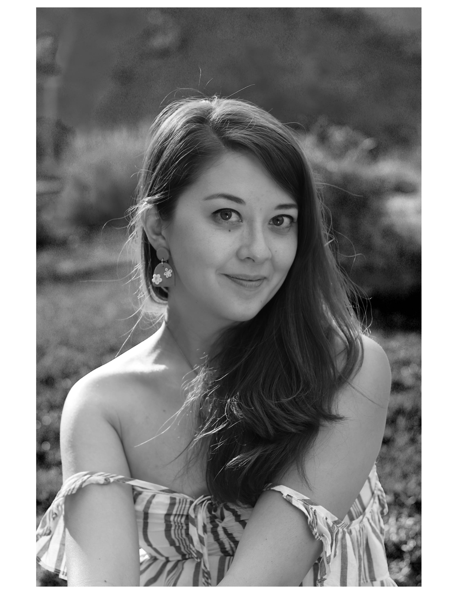
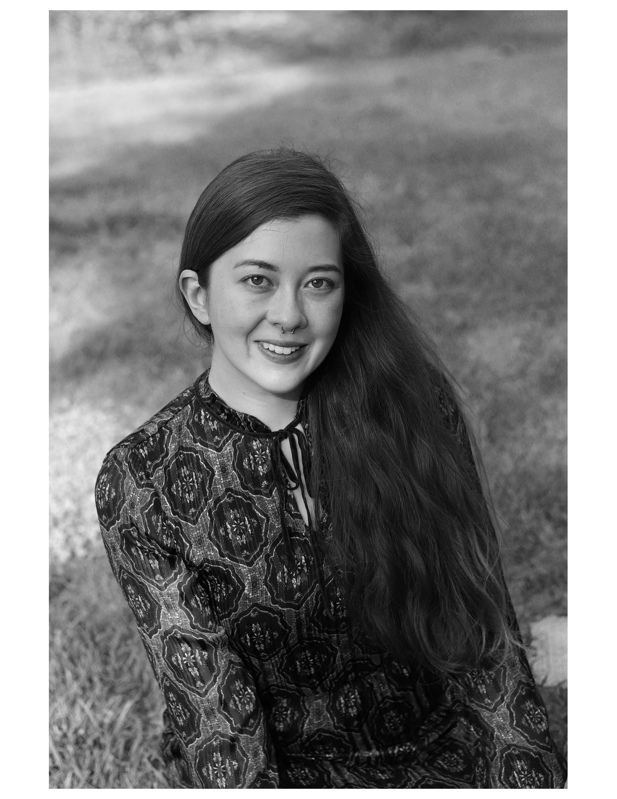

Karen Herrmann Onate

Elizabeth Herrmann
Artistri is a portfolio with works by twin artists, Karen Herrmann Onate and Elizabeth Herrmann, who were born, raised and based in Los Angeles.
Karen Herrmann Onate
Elizabeth Herrmann